Tutorial: como enviar o eSocial SST no Bevart, do cadastro ao S-2240
O caminho completo com telas reais: cadastrar a empresa, configurar o transmissor, montar o inventário de riscos e gerar o S-2240 pela lista de funcionários.

O essencial em 30 segundos
- A ordem importa: empresa e unidade, transmissor, setor e função (com o GHE), inventário de riscos ligado ao GHE e, só então, o funcionário.
- Antes de transmitir, abra a conferência do S-2240 no próprio funcionário: ela mostra cada campo que vai para o XML e onde corrigir o que faltar.
- O envio sai da lista de funcionários, em massa: Processar S2240 (Enviar eSocial) transmite; Processar S2240 (Apenas XML) só gera o arquivo.
Para enviar o S-2240 pelo Bevart você não preenche o evento campo a campo. Você cadastra a estrutura uma vez (empresa, setor, função, GHE e riscos) e o sistema monta o XML de cada funcionário a partir dela. O envio é feito em Cadastros > Funcionários, em Ações em Massa (+ eSocial).
Este tutorial foi feito executando cada passo numa conta de demonstração, com uma empresa fictícia (Metalúrgica Tutorial) e um funcionário fictício (Carlos Teste da Silva, torneiro mecânico exposto a ruído). Os prints são das telas reais do sistema.
| Antes de começar | Detalhe |
|---|---|
| Nível | Intermediário. Cerca de 30 minutos na primeira empresa. |
| Certificado digital | A1 (arquivo) do empregador, ou o seu, se tiver procuração eletrônica dos clientes. |
| Responsável técnico | Profissional cadastrado em Cadastros > Profissionais da Segurança, para assinar as medições. |
| Eventos anteriores no eSocial | O empregador e o vínculo do trabalhador precisam existir no eSocial (S-1000, S-1005 e S-2200, normalmente enviados pela folha). |
Passo 1: cadastre a empresa e a unidade
Abra Cadastros > Empresa e clique em Nova Empresa.
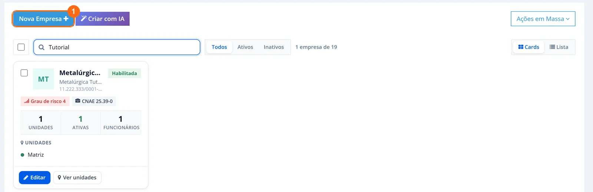
Preencha o formulário:
- Grupo: escolha um grupo existente ou digite o nome para criar um novo.
- Nome Fantasia.
- Tipo de Inscrição: 1-CNPJ na maioria dos casos.
- Nº de Inscrição eSocial (CNPJ, CPF...), somente números. O botão Consultar busca os dados do CNPJ.
- Razão Social, igual à registrada.
- Buscar grau de risco pelo CNAE: preenche CNAE, atividade e grau de risco de uma vez.
- CEP.
- Deixe marcado Criar a unidade automaticamente com os mesmos dados desta empresa. O eSocial trabalha por estabelecimento, e é na unidade que os setores ficam.
- Clique em Adicionar.
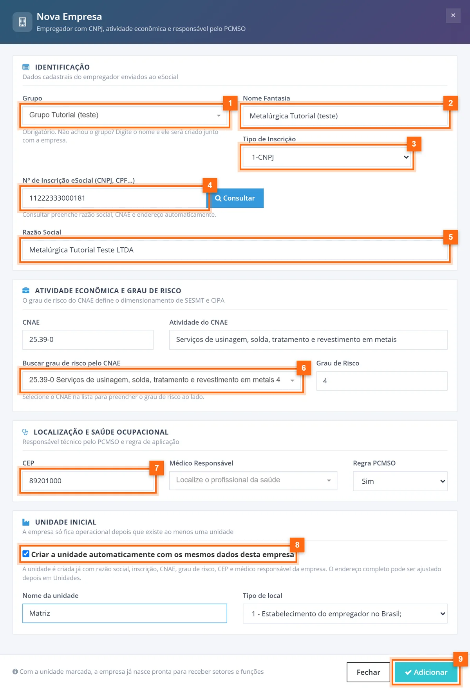
Na busca de CNAE, digite o código com ponto (25.39) ou uma palavra da atividade (usinagem). Só os números, sem o ponto, a busca não encontrou nada no nosso teste.
Resultado: aparece o aviso "Empresa e unidade criadas com sucesso" e o card da empresa mostra 1 unidade.
Passo 2: configure o transmissor eSocial
O transmissor é quem assina o envio. Abra o menu do seu usuário, no canto superior direito, e clique em Transmissor eSocial.
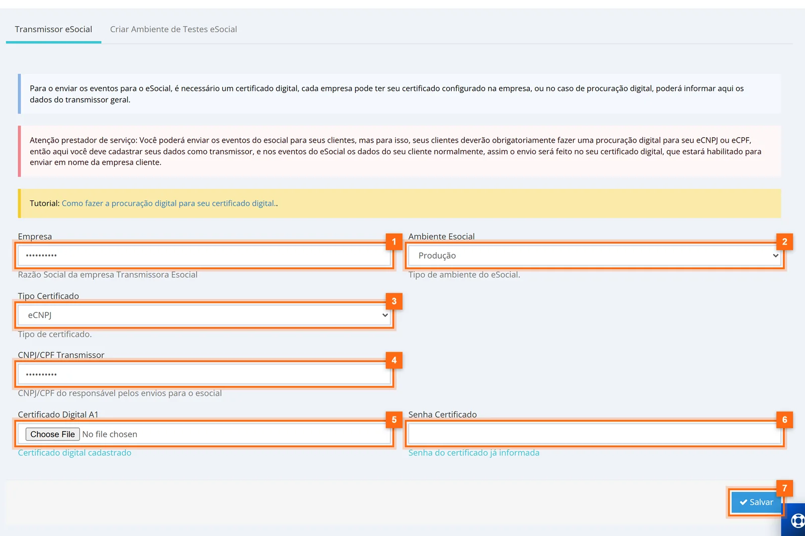
- Empresa: razão social da empresa transmissora.
- Ambiente Esocial: Testes enquanto você valida; Produção para valer.
- Tipo Certificado: eCNPJ ou eCPF.
- CNPJ/CPF Transmissor: o documento do titular do certificado.
- Certificado Digital A1 e Senha Certificado.
- Clique em Salvar. Quando já existem, a tela mostra "Certificado digital cadastrado" e "Senha do certificado já informada".
Se você é consultoria e envia por vários clientes, a própria tela explica o caminho: os clientes fazem uma procuração digital para o seu eCNPJ ou eCPF, você cadastra os seus dados como transmissor e, nos eventos, entram os dados de cada cliente. Veja como cadastrar a procuração digital para o eSocial SST.
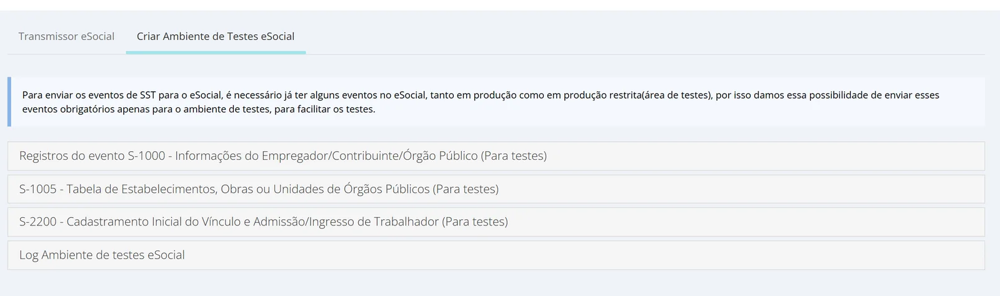
Monte a estrutura uma vez e envie o S-2240 em lote
No Bevart, o mesmo inventário de riscos que alimenta PGR e LTCAT gera o S-2240 de cada funcionário do GHE.
Criar conta grátisPasso 3: cadastre o setor e a função (com o GHE)
Em Cadastros > Setor, clique em Novo Setor e escolha Grupo, Empresa e Unidade. Dê o Nome (ex.: Usinagem) e preencha o Tipo de local.
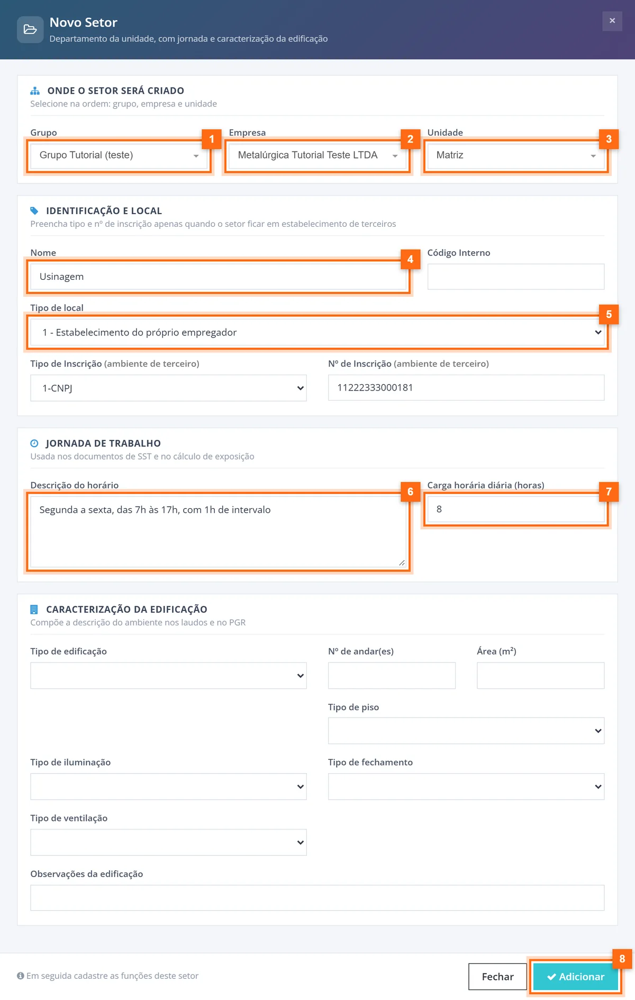
Ele vira o campo "tipo de estabelecimento do ambiente de trabalho" do S-2240. No nosso teste, criamos o setor sem ele e a conferência do funcionário mostrou o campo vazio. Para o próprio estabelecimento, use 1 - Estabelecimento do próprio empregador.
Depois, em Cadastros > Função, clique em Nova Função:
- Escolha a Unidade e o Setor.
- Informe a Função (ex.: Torneiro mecânico).
- Em Buscar CBO, digite o código (ex.: 721215). A busca é por número, não pelo nome do cargo.
- Escreva a Descrição da atividade: ela vai para o S-2240 e para o PPP.
- Marque Criar também um GHE com o mesmo nome desta função e vincular a função e clique em Adicionar.
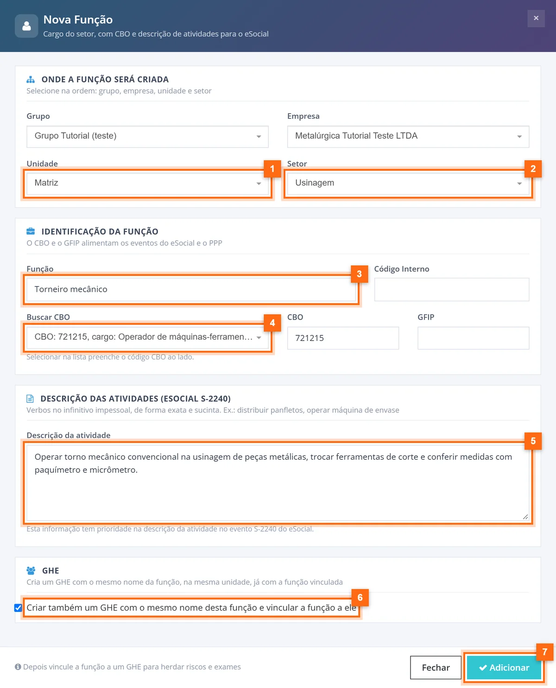
Resultado: a função aparece na lista com o GHE de mesmo nome. É nesse GHE que o risco do próximo passo será ligado.
Passo 4: monte o inventário de riscos
Em Gestão Segurança > Inventário de riscos, clique em Novo Risco/Perigo. Se já tem riscos prontos, Modelos de Riscos traz um modelo completo. Para entender a lógica do inventário, veja como montar o PGR: inventário de riscos e plano de ação.
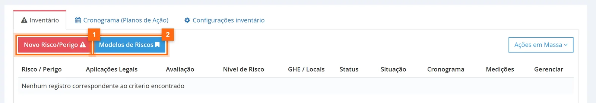
A janela tem seis abas. Os campos com a etiqueta eSocial vão para o XML.
Identificação
Escolha Grupo, Empresa e Unidade. Em Documentos onde este risco deve aparecer, marque e-Social: sem essa marca o risco não entra no S-2240. Defina a classificação e a situação.
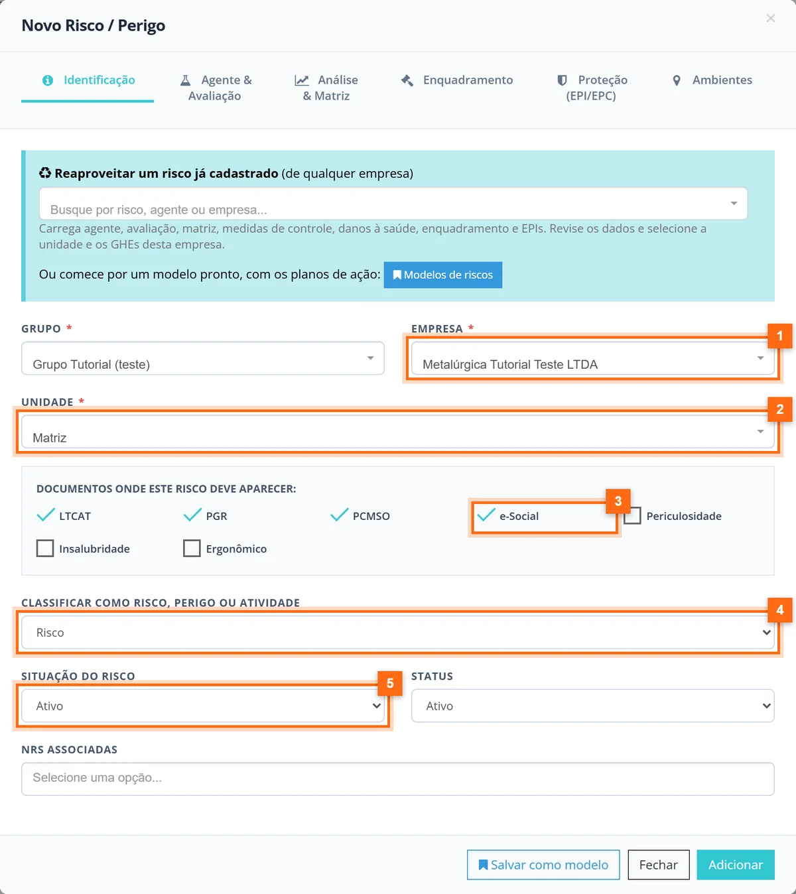
Agente e avaliação
- Agente Nocivo: busque pelo código da Tabela 24 (ex.: 02.01.001, ruído contínuo ou intermitente).
- Tipo de avaliação do Risco/Atividade: quantitativo ou qualitativo.
- Data da medição/avaliação.
- Responsável pela medição: o profissional cadastrado.
- Intensidade e Limite tolerância, quando quantitativo.
- Unidade de Medida e Técnica de medição.
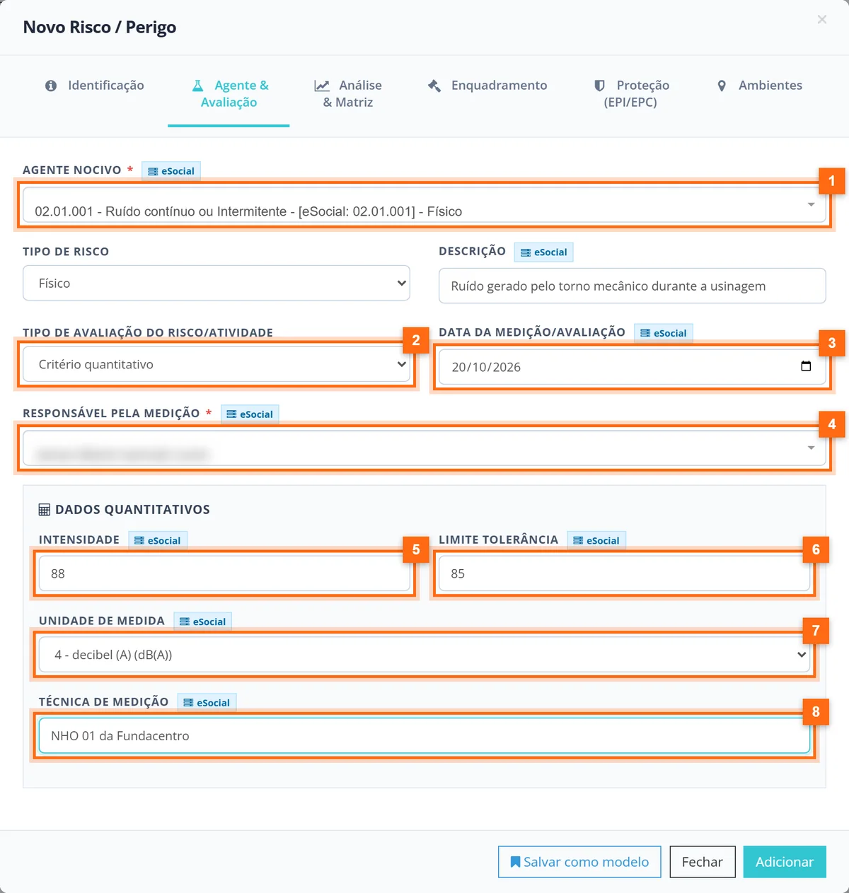
Análise e matriz, enquadramento
Na aba Análise & Matriz ficam probabilidade, severidade, nível do risco, fonte geradora, medidas de controle e danos à saúde. Esses campos alimentam o PGR. Enquadramento trata de GFIP, insalubridade, periculosidade e aposentadoria especial.
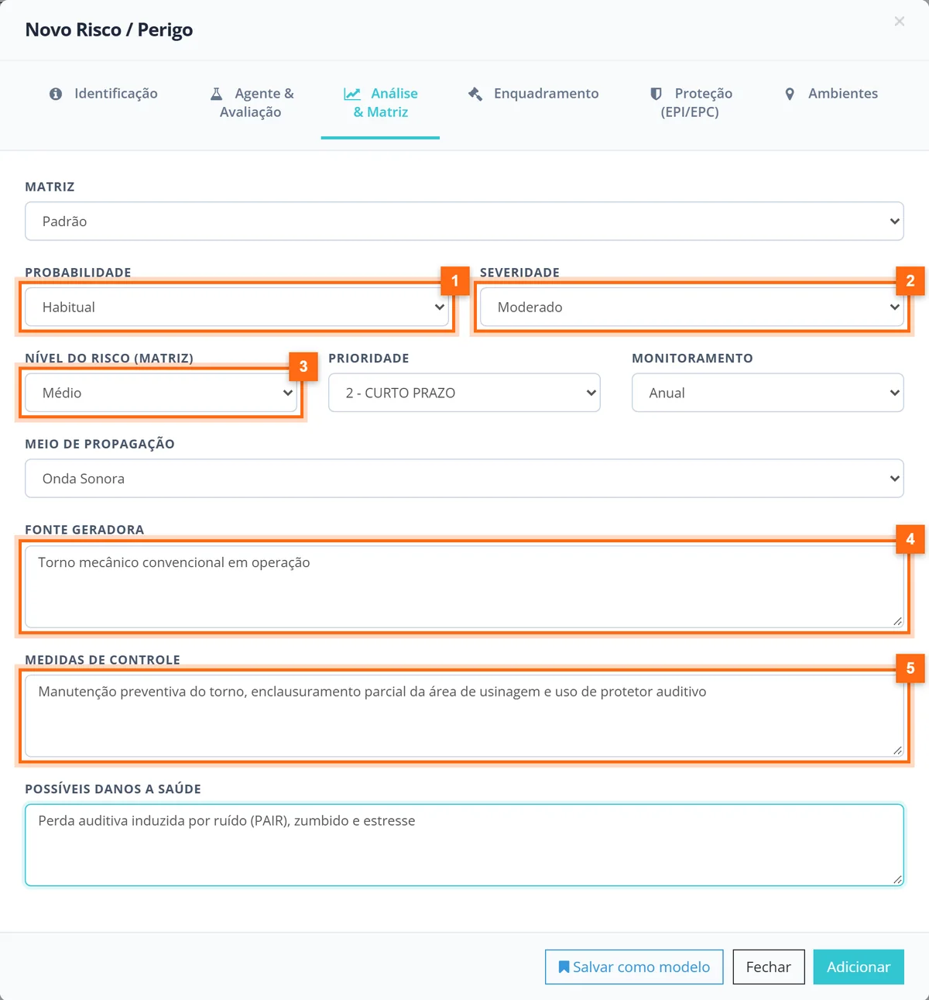
Proteção (EPI/EPC)
Responda se o empregador implementa EPC e se é eficaz, se utiliza EPI e se é eficaz. Para cada EPI, informe o CA, escolha o EPI e clique em Adicionar EPI: ele entra na tabela logo abaixo. Responda também os requisitos das NRs no fim da aba.
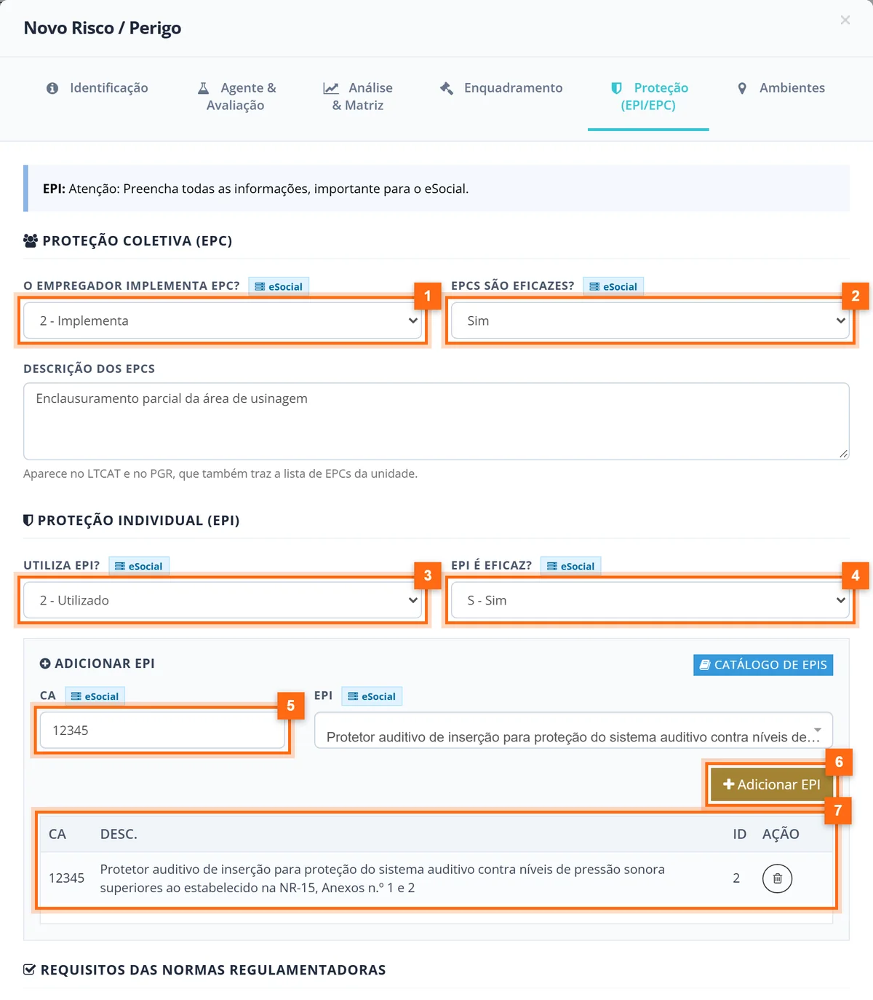
Ambientes
Em Ambiente, escolha o GHE (Torneiro mecânico), clique em + Adicionar e confira se ele entrou na tabela. Clique em Adicionar no rodapé para salvar o risco.
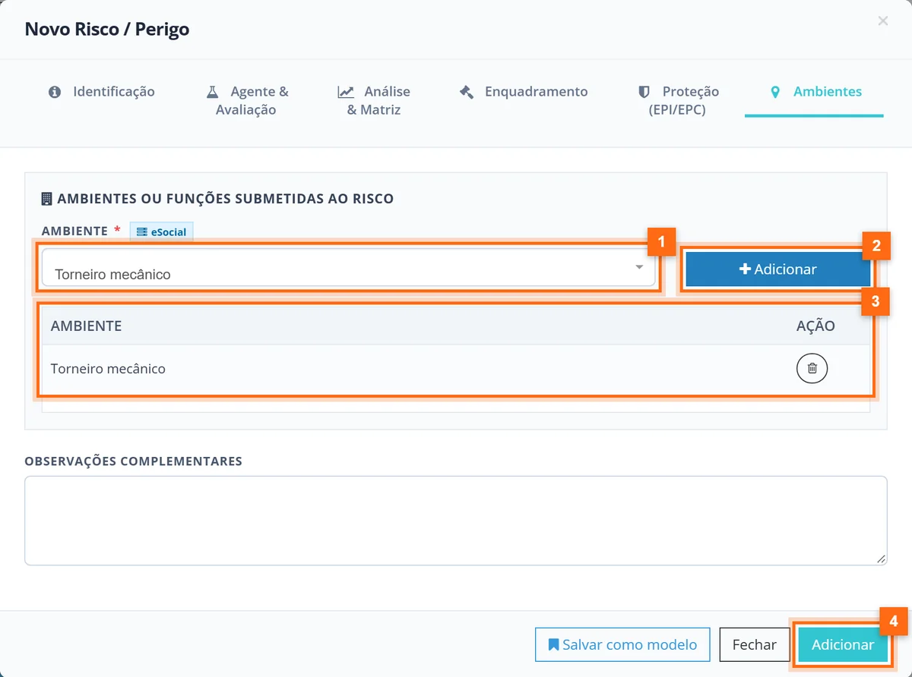
Resultado: o aviso "Cadastro criado com sucesso" e o risco na lista, com as etiquetas dos documentos e o GHE.
Passo 5: cadastre o funcionário
Em Cadastros > Funcionários, clique em Novo Funcionário. Se tiver o XML do S-2200, o campo Importar XML S2200(Admissão eSocial) agiliza o preenchimento.
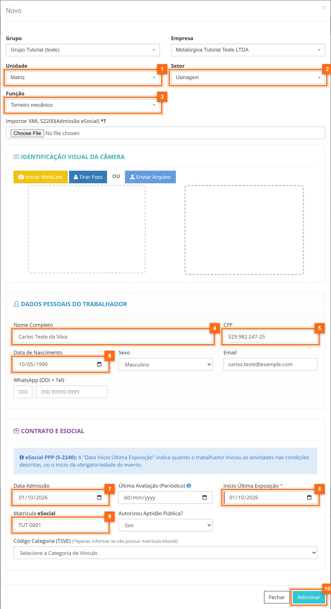
Dois campos decidem o S-2240:
- Matrícula eSocial: a mesma do S-2200. Sem matrícula (trabalhador sem vínculo), informe o Código Categoria (TSVE).
- Início Última Exposição: a própria tela explica que é quando o trabalhador iniciou as atividades nas condições descritas, ou o início da obrigatoriedade do evento. A regra das datas está detalhada em como enviar o evento S-2240 e gerar o PPP.
Passo 6: confira o S-2240 do funcionário
Na lista de funcionários, mude para a visão Tabela e clique no ícone da coluna eSocial.
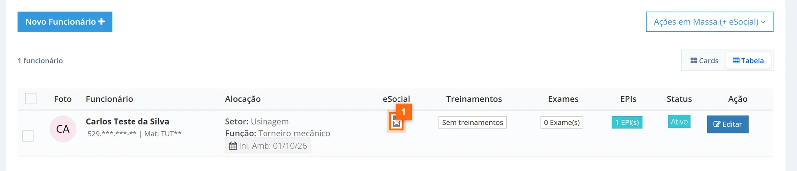
Clique em Faça a Conferência Clique Aqui - Informações para gerar XML eSocial S2240. A lista mostra transmissor, empregador, funcionário, ambiente, agentes nocivos, EPC/EPI e responsável pelos registros ambientais. Cada bloco tem um link ACESSAR LOCAL que leva à tela onde aquele dado é corrigido.
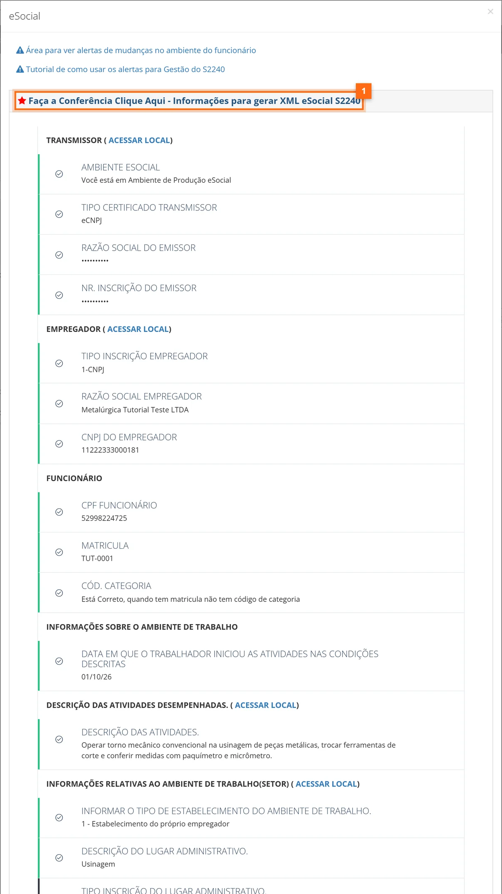
Passo 7: envie pelos funcionários
Marque a caixa dos funcionários na tabela, abra Ações em Massa (+ eSocial) e escolha:
- Processar S2240 (Enviar eSocial): gera e transmite com o certificado do transmissor.
- Processar S2240 (Apenas XML): só gera o XML, para conferir ou enviar por outro sistema.
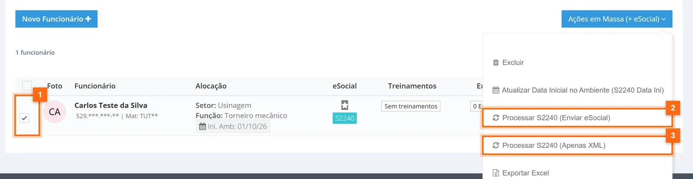
Confirme a pergunta "Tem certeza que deseja ?". O aviso "Lista em processamento, veja mais na tela do evento S2240" indica que o lote entrou na fila. Neste tutorial usamos Apenas XML, porque a empresa é fictícia.
Passo 8: acompanhe o evento
Em Painel eSocial > S2240 (PPP elet.), filtre a empresa e clique em Buscar. Em cerca de um minuto o evento aparece com o ambiente, a data e o status.
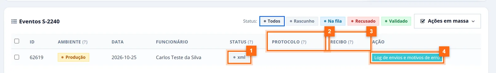
Os filtros de status da tela são Rascunho, Na fila, Recusado e Validado. Quando o eSocial aceita o evento, protocolo e recibo são preenchidos. Se recusar, Log de envios e motivos de erro mostra o retorno do governo e aponta onde procurar a explicação de cada código de erro.
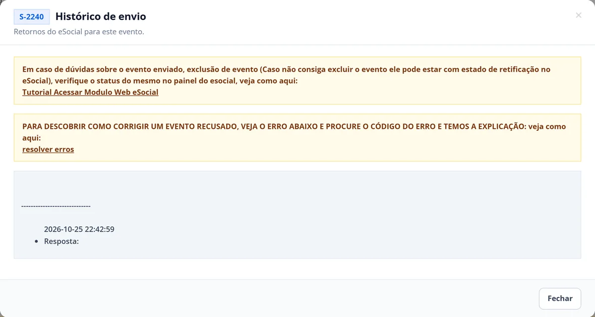
Resultado esperado
- Empresa e unidade criadas, com o transmissor configurado.
- Setor com tipo de local, função com CBO e descrição, GHE vinculado.
- Risco com a marca e-Social, agente da Tabela 24, EPI na tabela e o GHE em Ambientes.
- Funcionário com matrícula e início da exposição, conferência completa.
- Evento na tela do S-2240, com recibo quando validado.
Dicas e observações
- Mudou risco, EPI, função ou responsável técnico? É preciso um novo S-2240 com a data da mudança. O filtro S2240 Desatualizado da lista de funcionários e os Alertas para PPP ajudam a achar quem precisa de reenvio.
- Para conferir o que o governo recebeu, use o módulo web do eSocial.
- Prazo do S-2240: até o dia 15 do mês seguinte ao início da exposição ou à mudança.
Perguntas frequentes
Preciso preencher o S-2240 de cada funcionário à mão no Bevart?
Não. O Bevart monta o S-2240 a partir do setor, da função, do GHE e dos riscos marcados para o eSocial. Você confere no ícone eSocial do funcionário e envia em massa pela lista de funcionários.
Qual a diferença entre Processar S2240 (Enviar eSocial) e Apenas XML?
Enviar eSocial gera o XML e transmite com o certificado do transmissor. Apenas XML só gera o arquivo, útil para conferir antes ou para enviar por outro sistema.
Por que o risco não aparece no S-2240 do funcionário?
Confira três pontos no risco: a marca e-Social em Documentos onde este risco deve aparecer, o agente nocivo da Tabela 24 e o GHE adicionado na aba Ambientes. O funcionário também precisa estar na função ligada a esse GHE.
Consigo testar o envio sem mandar para produção?
Sim. Em Transmissor eSocial, escolha o ambiente Testes. A aba Criar Ambiente de Testes eSocial envia S-1000, S-1005 e S-2200 para a produção restrita, que precisam existir antes dos eventos de SST.
Com o S-2240 em dia, o próximo passo é organizar os exames: veja como transcrever o ASO para o S-2220.